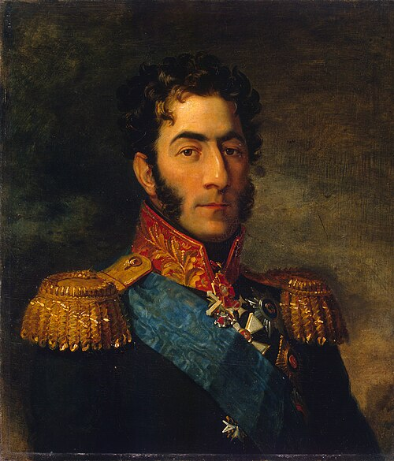
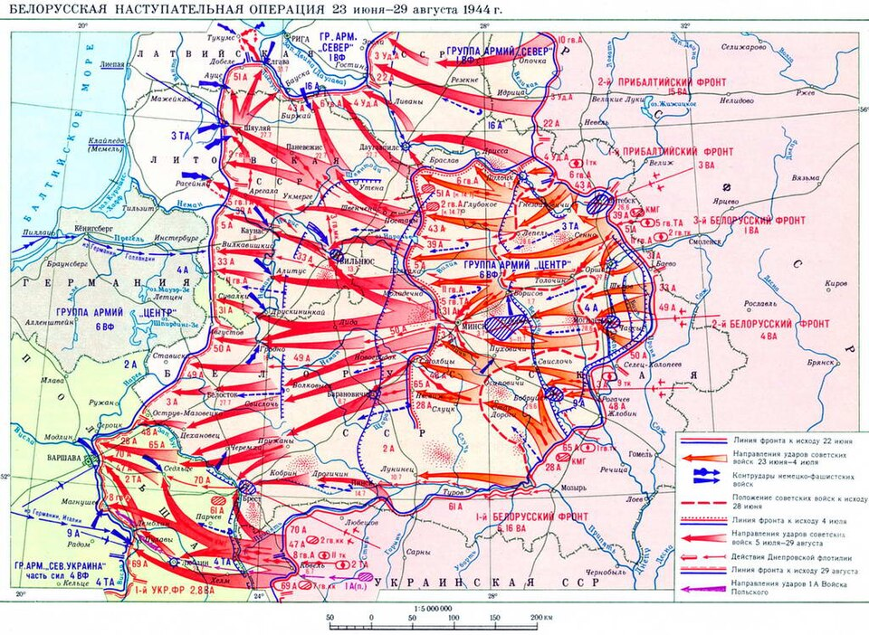
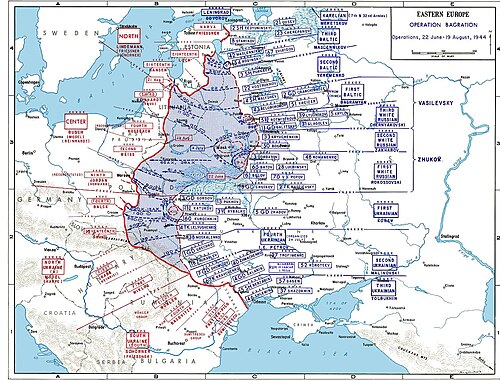
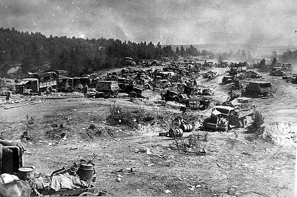
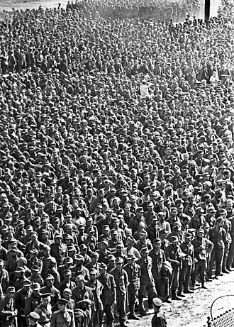

Date
June 22 – August 19, 1944
Location
Byelorussian SSR
Result
Decisive Soviet Victory

The Soviet operation was named after the Georgian prince Pyotr Bagration (1765–1812), a general of the Imperial Russian Army during the Napoleonic Wars.
Overview
The codename for the Soviet 1944 Byelorussian Strategic Offensive Operation. It resulted in the complete destruction of the German Army Group Centre.
| Faction | Commanders | Casualties |
|---|---|---|
| USSR | General Zhukov, Konstantin Rokossovsky | ~180,000 killed/missing |
| Germany | Ernst Busch, Walter Model | ~400,000 killed/missing |


The Conflict
Operation Bagration (Russian: Операция «Багратио́н», romanized: Operatsiya Bagration) was the codename for the 1944 Soviet Byelorussian strategic offensive operation (Russian: Белорусская наступательная операция «Багратион», romanized: Belorusskaya nastupatelnaya operatsiya "Bagration"), a military campaign fought between 22 June and 19 August 1944 in Soviet Byelorussia in the Eastern Front of World War II, just over two weeks after the start of Operation Overlord in the west. It was during this operation that Nazi Germany was forced to fight simultaneously on two major fronts for the first time since the war began. The Soviet Union destroyed 28 of the divisions of Army Group Centre and completely shattered the German front line. The overall engagement is the largest defeat in German military history, with around 450,000 German casualties, while setting the stage for the subsequent isolation of 300,000 German soldiers in the Courland Pocket.
On 22 June 1944, the Red Army attacked Army Group Centre in Byelorussia, with the objective of encircling and destroying its main component armies. By 28 June, the German 4th Army had been destroyed, along with most of the 3rd Panzer and 9th Armies. The Red Army exploited the collapse of the German front line to encircle German formations in the vicinity of Minsk in the Minsk Offensive and destroy them, with Minsk liberated on 4 July. With the end of effective German resistance in Byelorussia, the Soviet offensive continued on to Lithuania, Poland and Romania over the course of July and August.
The Red Army successfully used the strategies of Soviet deep battle and maskirovka (deception) to their full extent for the first time, albeit with continuing heavy losses. Operation Bagration diverted German mobile reserves from the Lublin–Brest and Lvov–Sandomierz areas to the central sectors, enabling the Soviets to undertake the Lvov–Sandomierz Offensive and Lublin–Brest Offensive. This allowed the Red Army to reach the Vistula River and Warsaw, which in turn put Soviet forces within striking distance of Berlin, conforming to the concept of Soviet deep operations—striking into the enemy's strategic depths


Significance & Aftermath
- This was by far the greatest Soviet victory in numerical terms. The Red Army recaptured a vast amount of Soviet territory and occupied some Baltic and Polish territories whose population had suffered greatly under the German occupation. The advancing Soviets found cities destroyed, villages depopulated, and much of the population killed or deported by the occupiers.[citation needed] To show the outside world the magnitude of the victory, some 57,000 German prisoners, taken from the encirclement east of Minsk, were paraded through Moscow: even marching quickly and twenty abreast, they took 90 minutes to pass.[85][86][87] This was later known as the Parade of the Vanquished.
- The German army never recovered from the materiel and manpower losses sustained during this time, having lost about a quarter of its Eastern Front manpower, exceeding even the percentage of loss at Stalingrad (about 17 full divisions). These losses included many experienced soldiers, NCOs and commissioned officers, which at this stage of the war the Wehrmacht could not replace. According to German sources, Army Group Center suffered 27 divisions badly mauled; with 19 disbanded and 7 amalgamated to form just two divisions; losses were "far worse" than at Stalingrad, Tunis or Falaise.
- An indication of the completeness of the Soviet victory is that 31 of the 47 German divisional or corps commanders involved were killed or captured.[89] Of the German generals lost, nine were killed, including two corps commanders; 22 captured, including four corps commanders; Major-General Hans Hahne, commander of 197th Infantry Division, disappeared on 24 June, while Lieutenant-Generals Zutavern and Philipp of the 18th Panzergrenadier and 134th Infantry Divisions died by suicide.
- The near-total destruction of Army Group Centre was very costly for the Germans. Exact German losses are unknown but newer research indicates around 400,000–540,000 killed, missing or wounded.[d] Soviet losses were also substantial, with 180,040 killed and missing, 590,848 wounded and sick, together with 2,957 tanks, 2,447 artillery pieces and 822 aircraft also lost.[14] The offensive cut off Army Group North and Army Group North Ukraine from each other and weakened them as resources were diverted to the central sector. This forced both Army Groups to withdraw from Soviet territory much more quickly when faced with the following Soviet offensives in their sectors.
- The end of Operation Bagration coincided with the destruction of many of the strongest units of the Wehrmacht engaged against the Allies on the Western Front in the Falaise Pocket in Normandy, during Operation Overlord. After these victories, supply problems rather than German resistance slowed the Allies' advance. The Germans transferred armoured units from the Italian front, where they could afford to give ground, to resist the Soviet advance near Warsaw. This was one of the largest Soviet operations of World War II with 2.3 million troops engaged, three Axis armies eliminated and vast amounts of Soviet territory recaptured.[91][non-primary source needed] In Soviet propaganda, this offensive was listed as one of Stalin's ten blows.